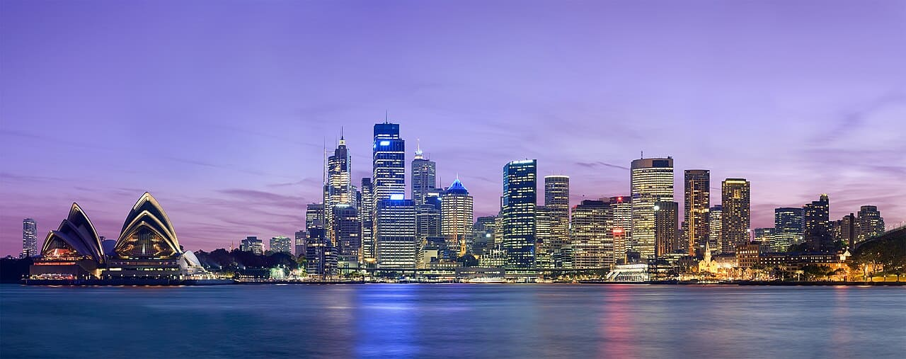
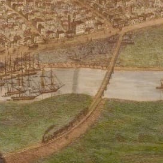
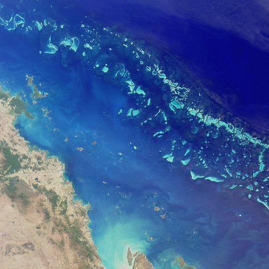
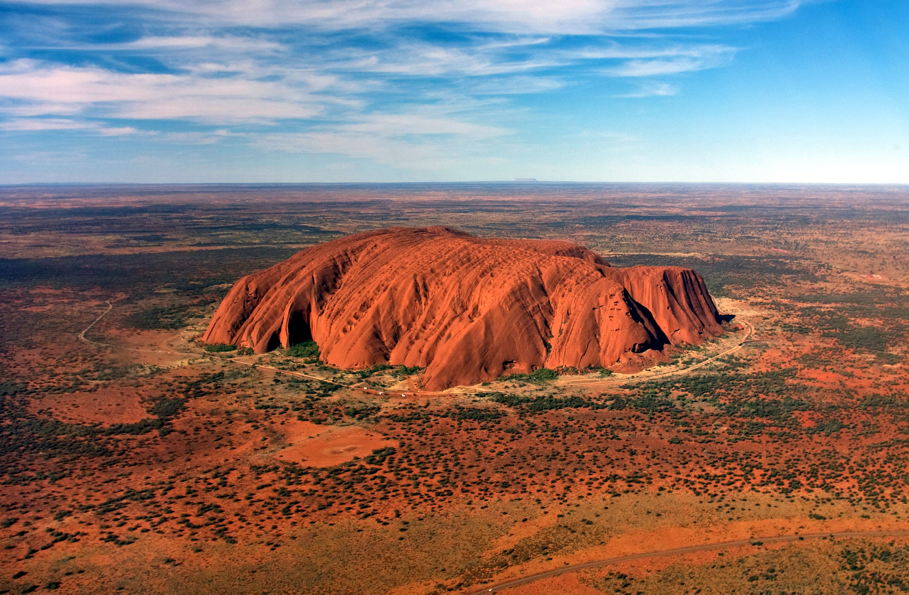

Australia - Land of Unique Wildlife and Natural Wonders

Introduction
Australia is a vast country known for its stunning landscapes, unique wildlife, and vibrant cities. From the iconic Sydney Opera House to the Great Barrier Reef, it offers something for every traveler.
Visitors can explore the Outback, rainforests, beaches, and cosmopolitan cities. Australian culture combines Indigenous heritage, British colonial history, and modern multicultural influences.
Quick Facts
- Capital: Canberra
- Population: Approximately 26 million
- Language: English
- Currency: Australian Dollar (AUD)
- Best Time to Visit: September to November and March to May (spring & autumn)
Explore Major Destinations
Jump to a specific destination
\r\n
Sydney

Region: New South Wales
Sydney is Australia's largest city, famous for its harbor, beaches, and vibrant arts scene. The city blends iconic landmarks with lively neighborhoods and stunning coastal scenery.
Visit the Sydney Opera House, climb the Harbour Bridge, relax at Bondi Beach, and explore Darling Harbour. Sydney offers world-class dining, cultural events, and a bustling nightlife.
Must-See Attractions
- Sydney Opera House - Iconic performing arts venue
- Harbour Bridge - Climb for panoramic views
- Bondi Beach - Popular surfing and sunbathing spot
- Taronga Zoo - Wildlife experiences with Sydney skyline views
- DARLING Harbour - Restaurants, museums, and entertainment
Back to top
Melbourne

Region: Victoria
Melbourne is Australia's cultural capital, renowned for art, music, sports, and food. The city offers vibrant laneways, street art, and world-class galleries.
Explore Federation Square, Royal Botanic Gardens, and the Melbourne Zoo. Melbourne hosts international events and festivals throughout the year, providing rich cultural experiences.
Must-See Attractions
- Federation Square - Cultural and arts hub
- Royal Botanic Gardens - Scenic green space
- Melbourne Zoo - Wildlife from around the world
- Eureka Skydeck - Observation deck with panoramic city views
- Laneways & Street Art - Iconic urban art and cafes
Back to top
Great Barrier Reef

Region: Queensland Coast
The Great Barrier Reef is the world's largest coral reef system, home to diverse marine life and crystal-clear waters. It is a UNESCO World Heritage Site.
Snorkel, dive, or take a boat tour to explore the reef. The area offers tropical islands, beaches, and unique wildlife encounters, making it a must-visit natural wonder.
Must-See Attractions
- Whitsunday Islands - Tropical paradise with white sand beaches
- Cairns - Gateway city for reef tours
- Snorkeling & Diving - Explore coral gardens and marine life
- Great Barrier Reef Marine Park - Conservation and eco-tours
- Heart Reef - Iconic heart-shaped coral formation
Back to top
Uluru

Region: Northern Territory
Uluru, also known as Ayers Rock, is a massive sandstone monolith sacred to the local Anangu people. It is a symbol of Australia's natural and cultural heritage.
Walk around the base, learn about Aboriginal culture, and witness spectacular sunrises and sunsets. Uluru is an iconic landmark that captures the spirit of the Australian Outback.
Must-See Attractions
- Base Walk - Full circuit around Uluru with cultural insights
- Kata Tjuta (The Olgas) - Nearby rock formations with hiking trails
- Field of Light - Art installation by Bruce Munro
- Sunrise & Sunset Viewing Areas - Spectacular color changes
- Uluru Cultural Centre - Learn about Indigenous history and traditions
Back to top
Travel Tips for Australia
Here are some essential tips for traveling in Australia.
- Transport: Domestic flights recommended for long distances; trains and buses connect major cities.
- Currency: Australian Dollar (AUD); widely accepted, credit cards are common.
- Weather: Seasons are opposite to Northern Hemisphere; pack accordingly.
- Wildlife: Be cautious with native animals and marine life; follow local guidelines.
- Culture: Respect Indigenous heritage sites; follow local laws and outdoor safety advice.
← Back to Oceania Home